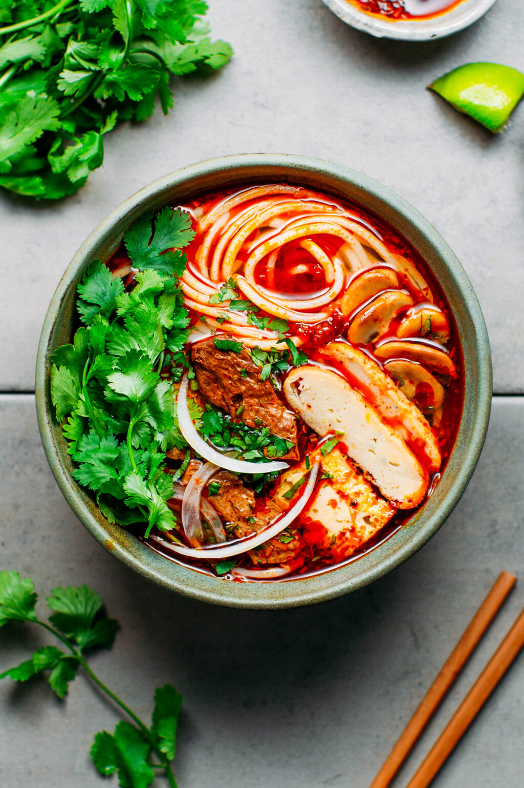

Bun Bo Hue

Description
Bun bo Hue or bun bo is a popular Vietnamese soup containing rice vermicelli and beef. Bún bò Hue or bun bo is a popular Vietnamese soup containing rice vermicelli (bún) and beef (bò). Hue is a city in central Vietnam associated with the cooking style of the former royal court.
Ingredients
Protein
- 2 lbs beef shank
- 2 lbs oxtail
- 2 lbs pork hocks
- 1 lb Hue style pork sausage
Broth base
- Water
- 24 oz chicken broth
- 12 stalks lemongrass
- 2 yellow onions, large
- Spices: salt, sugar, shrimp paste (Lee Kum Kee), fish sauce, msg
Aromatics
- Anatto seeds
- Cooking oil
- Shallot
- Minced garlic
Herbs & Veg
- Mint
- Basil
- Bean sprouts
- Birds eye chile or jalapeno
- Sliced lime
- Banana flower
Noodles
- 14 oz package dried rice noodle
Sate (Spicy Chile Condiment)
- 20g dried Thai chile
- 1/2 c neutral cooking oil
- 80g shallot or white onion (minced)
- 40g garlic
- 30g lemongrass
- Spices: fish sauce, sugar, salt, MSG
Steps
Broth
- Clean the meat: Add all meat to a stock pot and enough water to submerge it, bring to a boil. Drain and rinse thoroughly under running water.
- Add the meat, broth, lemongrass and onions to the pot and fill with water almost to the brim. Bring to a boil then drop the heat to medium-high to maintain a low boil. Add the seasoning.
- Let it simmer and periodically check the meats for doneness and remove them as they finish cooking. The pork should be done after about an hour, the beef can vary between 2-3 hours.
- After all the meat has removed, let it cool, then slice it. Adjust seasoning and add water to the broth pot if necessary.
- Make the aromatics & coloring then add it to the pot.
- Boil noodles according to package instructions.
- Assemble your bowl, and serve with herbs and veg on a side platter.
Red Coloring and Aromatics
- Sauté seeds in oil on medium heat until the seeds give up the bright red color, then remove the seeds.
- Add shallots and garlic, sauté until brown.
- Add all of this to the pot of broth for color.
Sate (Spicy Chile Condiment
- Weigh out the dried Thai chiles, then soak in just enough warm water to cover the chiles for 20 minutes. Drain the water.
- Add all sate ingredients to a pan on medium heat and stir continuously to brown, cook, and slightly reduce the chile paste, about 30-40 minutes. If at any point it becomes too dry, you can add more oil, up to 50% of the amount we started with. Taste and reseason with sugar or salt as desired. See photo for how the final product should look.
- Let cool and transfer to a sealed jar stored in the fridge . You can add ~2 tbsp of the final product to the soup pot for a boost in flavor and color, or simply and let each person add to their bowl to make it as spicy as they'd like!